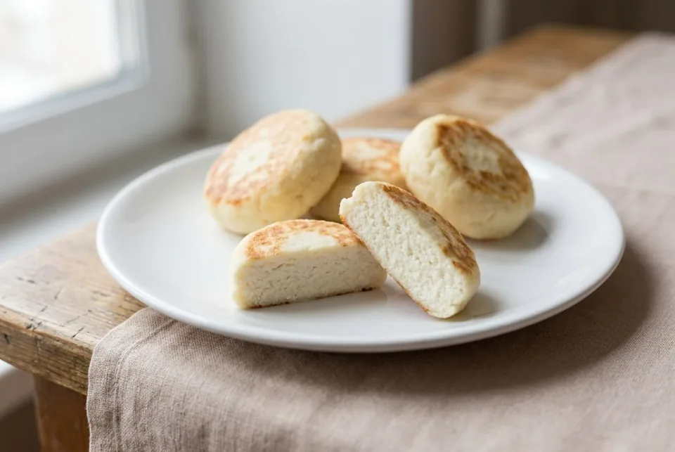

Завтраки · 20-25 мин
Сырники в аэрогриле
Нежные диетические сырники по пропорциям Елены Ландэ с ФитПарадом. Запекаются в аэрогриле без капли масла — почти 10 г белка в каждом сырнике!
К ингредиентам
Ингредиенты · 4 порций
- Творог «Красная цена» обезжиренный — 180 г (1 пачка)
- Яичный желток — 1 шт. (~17 г, без белка)
- Пшеничная мука — 20 г (15 г в тесто + 5 г для формовки)
- Подсластитель (ФитПарад) — 1 стик / доза на 1 ч. л. сахара (по вкусу)
- Соль — маленькая щепотка
Пищевая ценность
На 100 г: 149 ккал · Б 19.6 г · Ж 3 г · У 10.9 г
Шаг за шагом
Подготовка творожной основы
Слейте свободную сыворотку из пачки творога. В глубокой миске разомните 180 г обезжиренного творога вилкой, добавьте 1 яичный желток (белок не добавляйте, чтобы тесто не поплыло), ФитПарад по вкусу, щепотку соли и 15 г пшеничной муки (примерно 1 ст. л. без горки). Тщательно вымешайте массу вилкой до однородности.
Отдых теста (5–10 минут)
Оставьте творожную массу постоять при комнатной температуре на 5–10 минут — за это время клейковина муки набухнет и впитает влагу, масса станет пластичной и будет отлично держать форму. Если творог изначально был влажным и тесто липнет, добавьте ещё буквально пару граммов муки.
Формовка сырников
Припылите разделочную доску или стол оставшимися 5 г муки. Разделите массу на 4 равные части (примерно по 50–52 г) и сформируйте аккуратные круглые сырники толщиной около 1,5 см. Для идеально ровных бортиков можно подровнять их широким ножом или стаканом.
Разогрев аэрогриля и выкладка
Разогрейте аэрогриль до 160 °C. Застелите корзину силиконизированным пергаментом (к обычной бумаге обезжиренный творог прикипает). Сделайте один легкий пшик из бутылки-спрея с маслом на пергамент под сырники — это меньше 0.5 г масла, калорийность практически не изменится (+1 ккал на сырник), но они гарантированно не прилипнут. Выложите сырники с небольшими промежутками друг от друга (важно: не включайте прогрев с пустым легким листом бумаги внутри!).
Равномерное запекание и переворот (160 °C, 18–22 минуты)
Запекайте при 160 °C первые 10–12 минут. Более мягкая температура 160 °C позволяет сырникам плавно прогреться до самой середины и испарить лишнюю сыворотку, не запечатывая её внутри коркой. Перед переворотом сделайте легкий микро-пшик спрей-маслом сверху на сырники для золотистости. Аккуратно подденьте их тонкой плоской лопаткой, переверните и допекайте ещё 8–10 минут со второй стороны до уверенной корочки.
Стабилизация и подача (5–10 минут отдыха)
Достаньте сырники и обязательно дайте им постоять 5–10 минут на тарелке при комнатной температуре. Горячий творожный белок прямо из печки всегда суфлейно-мягкий — именно во время остывания структура стабилизируется, и сырники становятся упругими и нежными, без сырости внутри. Подавайте теплыми с любимыми ягодами или мягким творожком!
